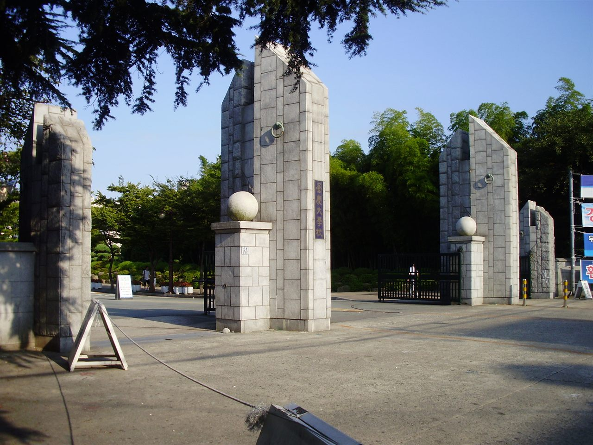

국립부경대학교는 부산 남구 대연동에 캠퍼스를 둔 국립대입니다. 부산에서 국립대를 생각하시면 부산대가 먼저 떠오르시겠지만, 부경대는 수산·해양·공학 계열의 전통이 강하고 인문·사회·경영 계열까지 폭넓게 모집하는, 부산·울산·경남 학생들이 실제로 많이 원서를 쓰는 대학입니다.
2027학년도 부경대는 신입생의 약 80%, 2,900명대를 수시로 뽑습니다. 원서접수는 9월 7일부터 11일까지였고, 이미 마감됐습니다. 그래서 오늘 글은 "어디에 쓸까"보다 "쓴 원서가 어떤 구조 위에 있는지", 그리고 내년·내후년에 지원할 고1·고2가 무엇을 미리 봐야 하는지에 초점을 맞췄습니다.
① 부경대 수시는 '교과 대학'입니다
부경대 수시에서 가장 먼저 눈에 띄는 것은 비율입니다. 수시 인원 가운데 학생부교과 전형이 2,400명대로, 수시 전체의 80%를 넘습니다. 학생부종합은 500명대에 그칩니다. 수도권 대학들이 교과와 종합을 비슷하게 나누는 것과 비교하면 확연히 다른 모습입니다.
교과 전형 안에서는 다시 세 갈래로 나뉩니다.
- 교과성적우수인재 — 1,500명 가까이. 부경대 수시에서 가장 큰 문입니다. 전국 어디서든 지원할 수 있습니다.
- 지역혁신인재 — 500명 가까이. 부산·울산·경남 지역 고교 출신 학생을 위한 전형입니다.
- 일반전형 — 200여 명. 보도에 따르면 고졸 검정고시 합격자도 지원할 수 있는 전형입니다.
교과 전형은 보도 기준으로 교과성적 90% + 출석 10%로 선발합니다. 출석이 10%라는 점이 작아 보여도, 내신 점수가 촘촘하게 붙어 있는 구간에서는 무단 결석·지각 기록이 차이를 만들 수 있습니다. 고1·고2라면 성적만큼 출결도 챙겨 두셔야 하는 이유입니다.
② '지역인재'가 아니라 '지역혁신인재'입니다
지방 국립대 글을 여러 편 읽어 오신 부모님이라면 "지역인재전형"이라는 이름을 찾으실 텐데, 부경대에서는 이름이 '지역혁신인재'입니다. 원서 사이트나 모집요강에서 검색하실 때 이 이름으로 찾으셔야 헷갈리지 않습니다.
비수도권 대학의 지역인재 선발은 법으로 권역이 정해져 있고, 부산은 울산·경남과 같은 권역으로 묶입니다. 2027학년도 기준으로는 해당 권역 고등학교에서 3년 과정을 이수하는 것이 기본 요건이며, 2028학년도부터는 중학교 과정부터 해당 지역에서 이수·거주하도록 요건이 강화됩니다. 지금 중학생 자녀가 있고 이사나 타 지역 고교 진학을 고민 중이시라면 꼭 따져 보셔야 할 대목입니다.
다만 부경대 지역혁신인재전형의 세부 지원 자격은 이 글에 확정 표기하지 않았습니다. 반드시 모집요강 원문으로 확인하십시오.
③ 수능최저는 교과 전형에만 붙습니다
부경대 2027 수시에서 수능최저학력기준은 학생부교과 3개 전형(교과성적우수인재·지역혁신인재·일반전형)에 적용되고, 학생부종합 전형에는 적용되지 않습니다.
이 구조가 원서를 쓴 수험생에게 뜻하는 바는 분명합니다. 교과로 지원했다면 합격은 내신만으로 끝나지 않고, 11월 수능에서 한 번 더 갈립니다. 지난해(2026학년도)까지는 계열에 따라 국어 또는 수학을 포함한 2개 영역 합산 방식이었는데, 2027학년도의 정확한 등급 기준은 이 글에 적지 않았습니다. 본인 모집단위 기준을 요강에서 꼭 확인하시고, 그 기준에 맞춰 남은 두 달의 과목 배분을 다시 짜 보시기를 권합니다.
반대로 학생부종합은 최저가 없는 대신 서류로만 승부가 납니다. 보도된 전형 방법에서는 면접이 언급되지 않았고 서류평가로 선발하는 것으로 알려져 있습니다. 면접 실시 여부와 평가 요소는 모집요강으로 확인하십시오.
④ 원서 마감 뒤 경쟁률 — 숫자를 이렇게 읽으십시오
원서접수가 끝나고 발표된 부경대 수시 경쟁률은 전체 8대 1 중반으로, 지난해(8대 1 후반)와 비슷하거나 약간 낮은 수준이었습니다. 전형별로 보면 차이가 큽니다.
- 교과성적우수인재 — 5대 1 중반. 인원이 가장 많은 만큼 배수가 낮게 나옵니다.
- 지역혁신인재 — 7대 1 수준
- 일반전형 — 10대 1 안팎
- 학교생활우수인재(학생부종합) — 19대 1 중반. 교과 전형보다 3배 이상 높습니다.
여기서 오해하기 쉬운 부분이 있습니다. 종합 전형 경쟁률이 높다고 더 어려운 것은 아닙니다. 수시는 한 사람이 6장까지 쓰기 때문에, 부담이 적은 서류 전형에는 "한 장 더"로 쓰는 지원이 몰립니다. 반대로 교과 전형은 경쟁률이 낮아 보여도 수능최저에서 걸러지는 인원이 있어 실질 경쟁률은 발표치와 달라집니다. 이미 원서를 쓰셨다면 경쟁률 숫자에 흔들리기보다, 교과는 최저 충족, 종합은 결과 발표까지 기다리기로 할 일을 나누시는 편이 낫습니다.
⑤ 2027년에 새로 생긴 것 — AX혁신대학
올해 부경대 입시에서 달라진 점은 AX혁신대학 신설입니다. AXIC자유전공학부, AX지속가능융합학과, AI융합시스템공학과 등 40명 가까운 인원을 새로 모집합니다. 학과 이름에서 알 수 있듯 AI와 산업 전환을 내세운 단과대학입니다.
신설 학과는 지난해 입시 결과가 없다는 점을 기억하셔야 합니다. 합격선을 가늠할 자료가 없으니 올해 결과가 나오면 내년 지원자에게는 중요한 첫 기준이 됩니다. 또 부경대는 자유전공학부를 교과로, 단과대학 자유전공학부는 종합으로도 모집하는 것으로 보도됐습니다. 전공을 아직 정하지 못한 학생에게는 선택지가 되지만, 입학 뒤 전공 선택 방식은 따로 확인하셔야 합니다.
⑥ 지원 전후 체크리스트
- 이미 원서를 썼다면 — 교과 전형은 본인 모집단위의 수능최저 기준을 다시 확인하고 남은 기간 공부 순서를 정리하십시오.
- 합격자 발표 — 12월 18일(금) 예정으로 보도됐습니다. 수시에 합격하면 등록 여부와 관계없이 정시 지원이 제한되니, 발표 전후 일정을 미리 알아 두십시오.
- 고2라면 — 내년 부경대를 본다면 교과 중심 대학이라는 점을 기억하십시오. 남은 2학기 내신과 출결이 원서 경쟁력의 대부분입니다.
- 부산·울산·경남 고교생이라면 — 지역혁신인재를 쓸 수 있는지, 자격 요건을 요강에서 먼저 확인하십시오.
- 중학생 자녀라면 — 2028학년도부터 강화되는 지역인재 요건(중학교부터 해당 지역 이수·거주)이 고교 진학 계획과 맞는지 살펴보십시오.
정리하면
국립부경대 2027 수시는 교과가 중심입니다. 수시 인원의 80% 이상이 학생부교과이고, 그 교과 전형에는 수능최저가 붙습니다. 결국 부경대를 겨냥한다면 "내신으로 원서를 쓰고, 수능으로 합격을 확정한다"는 두 단계 준비가 필요합니다.
이 구조는 고등학교 3년 내내 내신과 수능 기본기를 함께 끌고 가야 한다는 뜻이기도 합니다. 와와 학습코칭센터에서는 아이의 내신·수능 과목별 상태를 진단해 지금 무엇부터 채울지 함께 정리해 드립니다. 부산 지역을 포함한 가까운 센터에서 무료 상담을 받아 보실 수 있습니다.
※ 본 글의 모집규모·전형 구성·일정·경쟁률은 국립부경대학교의 2027학년도 수시모집 관련 언론 보도를 바탕으로 정리했으며, 수치는 이해를 돕기 위해 반올림·범위로 표기했습니다. 2027학년도 수능최저학력기준의 구체적 등급과 영역, 지역혁신인재전형의 세부 지원 자격, 학생부 반영 교과와 학년별 반영 비율, 학생부종합 전형의 면접 실시 여부와 평가 요소, 모집단위별 세부 모집인원, 신설 학과의 전공 선택 방식은 본 글에 담지 않았거나 확정 표기하지 않았습니다. 경쟁률은 원서접수 마감 기준 발표치이며 최종 확정 수치와 다를 수 있습니다. 사진은 2008년에 촬영된 것으로 현재 모습과 다를 수 있습니다. 반드시 국립부경대학교 입학처의 2027학년도 수시모집요강 원문에서 본인 지원 학과 기준으로 최종 확인하시기 바랍니다.